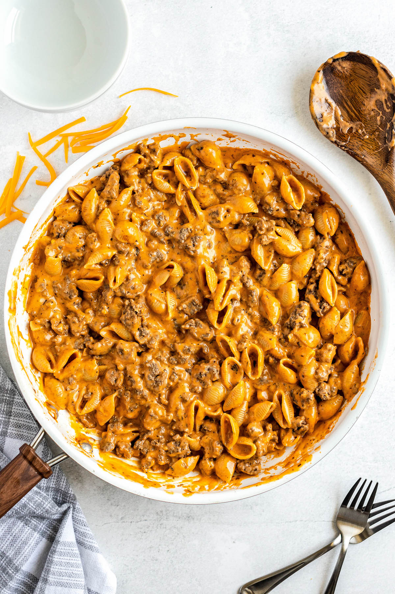

Hamburger Helper

Description
Pasta and ground beef are sautéed and covered in a creamy tomato & cheese sauce for a satisfying version of Homemade Hamburger Helper! Made in one pot, in just 30 minutes, this just might be your new favorite family dinner!
Ingredients
- 1 pound lean ground beef, or ground turkey
- 1 large yellow onion, diced
- 1 garlic clove, minced
- 2 tablespoons all-purpose flour
- 2 cups low-sodium beef broth, or chicken broth
- 1 (8 oz) can tomato sauce
- 1 teaspoon Italian seasoning
- 1 teaspoon seasoned salt
- ½ teaspoon smoked paprika
- ½ teaspoon garlic powder
- 8 oz small pasta shells, or small elbow pasta (Keep in mind 8 oz is half of a normal 1lb box of pasta.)
- ½ cup heavy cream, or half and half
- 2 cups shredded cheddar cheese
- salt and pepper, to taste
Steps
- In a large sauté pan with a lid, brown the ground beef over medium high heat. Remove cooked ground beef from pan and set aside, reserving 2 tablespoons of grease in the pan.
- Cook the onion until soft, about 5 minutes. Add the garlic for the last 30 seconds.
- Add the flour and stir to cook for about 1 minute, slowly stir in the beef broth and bring the mixture to a boil.
- Pour in the tomato sauce, Italian seasoning, seasoned salt, smoked paprika, garlic powder and pasta, stirring to combine. Cover with lid and sauté for 12 to 15 minutes or until pasta is cooked, stirring occasionally.
- Add in the cream and cheese and stir until all the cheese melted. Add back in ground beef, cook for 2 to 3 minutes more to re-heat ground beef and serve immediately!
Return to Home page